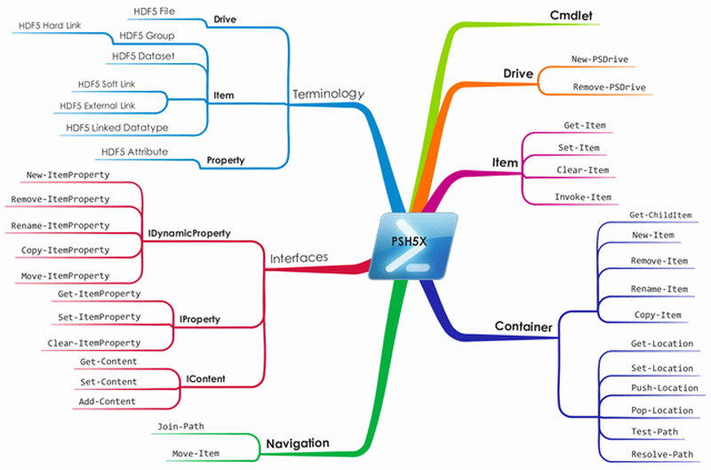

At the heart of the PSH5X module sits a so-called PowerShell provider. Through provider cmdlets, PowerShell providers present a set of consistent interfaces to custom data stores. Such data stores (e.g., HDF5 files) are presented to the user as PowerShell drives (PSDrive). Very much like HDF5 path names, PowerShell paths are used to locate PowerShell items in a provider. PowerShell items come in two flavors: container items and leaf-node (non-container) items. A PowerShell item might have content. A PowerShell item might also be decorated with PowerShell item properties. The collection of such properties of a PowerShell item can be thought of as a hash table (key/value pairs) associated with the item.
For a quick listing of generic (i.e., not every provider necessarily implements all of them) provider cmdlets type help *-Item* and help *-Content in a PowerShell session. You'll see names such as New-Item and Move-ItemProperty, names that are suggestive of the cmdlet's purpose.
| PowerShell | HDF5 |
|---|---|
| Drive | File |
| Item | Object or Link |
| Container Item | Group |
| Leaf Node Item | Dataset, Committed Datatype, or Link |
| Item Property | Attribute |
| Content | Dataset Value |
Anything in HDF5 that's not an attribute, content, or file is an item. Every HDF5 object is an item and HDF5 links are also considered items. HDF5 groups are the only kind of container item.
In the figure below, a pseudo-mindmap of the PSH5X core provider is shown.
